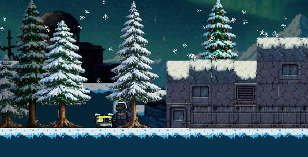

Сюжет
Ты начинаешь на поверхности мёртвой планеты. Под ногами — заражённые кристаллы, вдалеке — одинокий торговец, который знает больше, чем говорит.
Чтобы попасть внутрь базы, тебе предстоит добыть ключ-карту, торгуясь, исследуя окружение и находя забытые технологии.
Внутри тебя ждут тревоги, поломки, странные комнаты и враги, а также пасхалки — моменты, где игра замирает, позволяя тебе читать найденные записки и фрагменты прошлого.
